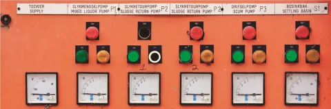
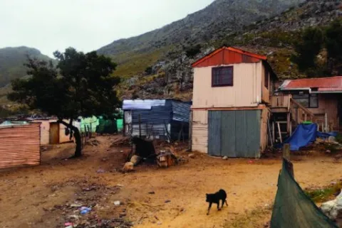
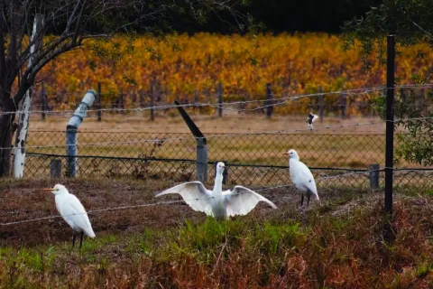
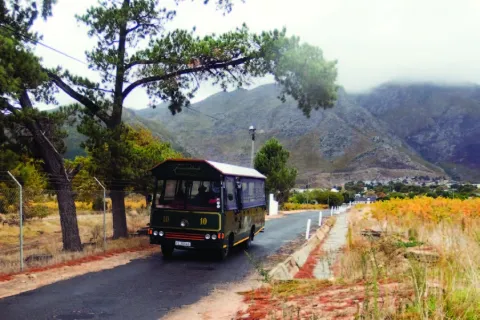
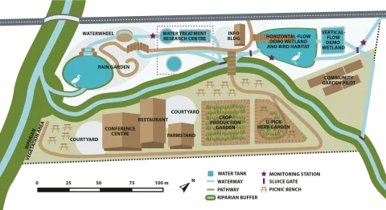

Retrofitting the Franschhoek wastewater treatment works
The Franschhoek Wastewater Treatment Works (WWTW) in the Franschhoek Valley (Western Cape, South Africa) was retired in 2008 after decades of service cleaning Franschhoek sewerage. A look at historic water quality statistics reveals the contaminated state of the Stiebeuel River, the tributary of the Franschhoek River on the banks of which the WWTW is located, due to urban runoff from urban areas in the catchment. Currently left completely unused, the former WWTW presents an exciting opportunity to remediate the contaminated runoff by intercepting it before it enters the Franschhoek River itself. On-site infrastructure can be retrofitted and modified for stormwater filtration purposes. Furthermore, the site holds the promise of simultaneously functioning as a vibrant community centre, a water treatment research facility, a unique tourist destination, and a place for visitors to learn the importance of sustainable water resource management.


An assessment of site potential and a vision for redevelopment
Geographic context
Under the Department of Water and Sanitation’s (DWS) classification system, the site is located in quaternary catchment G10A, This catchment comprises the tributaries and main bodies of the Berg River and Franschhoek River, up until their point of confluence near Wemmershoek. More specifically, the site lies in the Franschhoek Valley along the Franschhoek River channel, at the convergence of the river with its tributary, the Stiebeuel River.

Directly uphill from the site, across from Route 45, is the urban area broadly referred to as Le Roux, which consists of Groendal (a working-class neighbourhood designated as coloured in the apartheid era) and higher up the hill, Langrug (an informal settlement). To the southeast is the more-affluent destination town of Franschhoek proper. The Franschhoek wastewater treatment works (WWTW) site was decommissioned in 2008 along with a neighbouring site, the La Motte WWTW. Wastewater once processed by the site now flows via a 6.5 km pipeline to the Wemmershoek plant, which has been substantially upgraded (Uys, 2013). Since then, the Franschhoek site has been unused.


The Franschhoek-Stiebeuel confluence where the WWTW is located receives runoff water from two sources. First, the Stiebeuel River originates in the hills above Langrug (Figure 2), and passes through the informal settlement before crossing the WWTW site and emptying into the Frasnchhoek River. The river is notoriously polluted with urban runoff as a result. Second, the storm drain system from Langrug and Groendal passes the WWTW alongside the road.

Water quality indicators
Summary statistics collected from Department of Water and Sanitation (DWS) monitoring points characterise the historic water quality at the WWTW (Department of Water and Sanitation, 2014), and can be compared to the DWS water quality standards (Department of Water Affairs and Forestry, 1996). The aquatic guidelines (ibid., vol. 7) are based upon the magnitude of fluctuation from a site-specific background rate, while domestic guidelines (vol. 1) deal with absolute values; measured values are assessed here primarily in terms of domestic guides as site-specific background rates are unknown. Upstream from the project site on a tributary of the Franschhoek River, the Exelsior site has provided monitoring data from 2005 through 2013. The WWTW itself, at the convergence of the Stiebeuel and Franschhoek Rivers, has monitoring data from 2004 through 2013. Downstream from the project site, approaching the convergence of the Franschhoek and Berg Rivers, the La Motte site has data going back from 1966 to 2010. The distribution of these data for the overlapping years, 2005 through 2010 is shown below, reporting median values along with lower and upper quartiles.


Median pH becomes more alkaline progressing downstream past the project site, measuring 7.1 at Elelsior and 7.4 at La Motte. The WWTW site at the Stiebeuel convergence reported the highest median level of nitrogen oxides, ammonium, and electrical conductivity. This result is indicative of the polluted waste instream of the Stiebeuel, which gets diluted in the cleaner Franschhoek River. In the Franschhoek itself, nitrogen oxides were greater downstream at La Motte, while ammonium and electrical conductivity measurements were greater upstream at Exelsior.
Low pH can cause toxicity by enabling the dissolution of metals, while high pH can cause toxicity by deprotonating ammonium into ammonia gas, which can “compromise the disinfection of water and give rise to nitrite formation.” The interquartile pH ranges at all stations have been fully within the target range, but there are out-of-range extremes at the WWTW site. In particular, the 2005–2010 maximum pH recorded at the Franschhoek-Stiebeuel confluence, 9.39, is indicative of pollutants coming downstream from the informal settlement. In terms of aquatic ecosystem health, variations are cause for concern: exceeding the DWS-recommended maximum fluctuations of ±5% and ±0.5 pH, particularly at the widely-ranging WWTW site.
Nitrate and nitrite (NOx) in high concentrations can cause mucous membrane irritation and infant methaemoglobinaemia. NOx medians and interquartile ranges are all well within the DWS target range of less than 6 mg L-1 N, indicating that there is no particular cause for concern, although the maximums are at very unhealthy levels, approaching 20 mg L-1 N. In other words, NOx levels throughout this stretch of the river are typically healthy, yet on occasion very unhealthy by domestic standards. The target range for toxic ammonia gas (NH3) concentrations is less than 1.0 mg L-1 N. Water quality data reports concentrations for the ammonium ion (NH4+) which remains largely in its stable and non-toxic ionic form, unless a sufficiently alkaline environment (pH > 11) facilitates the deprotonation of NH4+ into NH3. Ammonium concentrations measured at the Stiebeuel-Franschhoek confluence far exceed the target range, but due to the neutral pH, should not pose a problem. High levels of ammonia can cause the formation of nitrite, but the aforementioned low NOx measurement suggests this is not an issue. Electrical conductivity (EC) is an indirect measurement of total dissolved solids (TDS), i.e., inorganic ions including “carbonate, bicarbonate, chloride, sulphate, nitrate, sodium, potassium, calcium and magnesium” (Department of Water Affairs and Forestry, 1996). While the target range is an electrical conductivity below 70 mS m-1, serious consequences beyond drinking water taste do not occur until higher concentrations. Long-term corrosion of infrastructure may begin around 150 mS m-1, with health effects beginning at 300 mS m-1. Electrical conductivity for the Franschhoek-Stiebeuel confluence tended to be much higher than for the Exelsior or La Motte locations, reaching concerns for corrosivity but not for health.
The water quality indicators presented in this section, albeit crude, suggest that the Franschhoek-Stiebeuel confluence has the most problematic water quality, demonstrating the necessity for adequate treatment of Le Roux urban runoff. Infrastructure already on the Franschhoek WWTW site provides the opportunity to address this problem.
Existing infrastructure
The model used at the WWTW traditionally has been to collect and treat municipal wastewater piped in, and discharge the treated water into the Stiebeuel River (A), which enters the site at the eastern corner and discharges in the southwest to the Franschhoek River. Urban runoff water from stormwater pipelines (B) and the Stiebeuel does not actually enter the treatment works. Now that municipal wastewater is being diverted past the Franschhoek WWTW to Wemmershoek, it passes by the site at the northern border, around the same location that the Groendal/Langrug stormwater pipeline passes by. Entering from the northern corner of the site, an open concrete conveyance channel leads into the site (C), equipped with a nowdefunct monitoring station. In the north section, there are also shallow drying beds for sludge recovery (D), a deep concretelined tank designed for chlorine treatment (E), and an unlined dam (F) once used to collect treated wastewater and settle out sediment before discharging it back into the Stiebeuel.
The management office (G) separates a second section of treatment infrastructure, beginning with primary treatment. Active sludge aeration ponds (H) once received and aerated raw sewerage, while a series of sludge treatment tanks (I, upper two) work to reduce its water content. Closer to the river in the west, a number of gates are designed release water into a large wetland (J) for biological treatment.
The site is divided in half by the Stiebeuel River, which enters at the eastern corner. The Stiebeuel River is heavily vegetated, indicative of the nutrient inflow from upstream urban runoff. Across the bridge there are two large and shallow unlined settling ponds (K). The remainder of this side of the property is open and empty, with the exception of a second set of above-ground sludge treatment tanks that are scheduled for removal (I, lower two), and ends with the gabion-reinforced banks of the Franschhoek River (L).


Visions for redevelopment
With the successful development of the Wemmershoek plant to use modern bioremediation processes, wastewater treatment plant at Franschhoek is no longer necessary. However, the issue of contaminated stormwater in the Langrug pipeline and Stiebeuel River remains, and the disused Franschhoek WWTW is the perfect opportunity to deal with this. This section presents a visionary example of possible redevelopment of the site, suggesting a potential model for converting the disused WWTW into a stormwater treatment facility that simultaneously educates, entertains, and employs.
This model would involve the reconfiguration of waterways but largely continue using the same tanks and ponds, requiring minimal infrastructure investment for the stormwater treatment itself. As less physical infrastructure is necessary for stormwater treatment than for sewerage, many of the facilities can also be converted into other elements that allow for community engagement. The site as a whole explores the intersection between water, food, and development, and is intended to remain self-sustaining economically following the initial investment in fixed costs of construction.


Water pipelines are adjusted such that the Langrug pipeline and Stiebeuel River stormwater, rather than running by the facilities passively, are directed into the site for treatment. The northwestern side of the river deals with the stormwater itself. The chlorine treatment tank (E) and pre-release settling pond (F) are converted into two constructed wetlands that can simultaneously deal with flood-level stormwater inputs during heavy rains, and filter contaminants. The former, deep tank becomes a vertical-flow wetland, in which effluent water passes through sand or gravel, filtered into an outlet below (Scholz & Lee, 2005). The latter, shallow unlined tank becomes a horizontal-flow wetland that mimics the filtration that occurs in a natural wetland ecosystem. Phragmites australis reeds, rooted in sediments or forming floating rafts, naturally uptake nutrients, physically filter the water, and provide a surface area for beneficial microorganisms. Reed-dominated wetlands are superior to open ponds at filtering out nitrogen (Moore & Hunt, 2012). The shallow wetland also provides a natural area (Figure 7) that can be made accessible by the construction of a boardwalk.
To the west, the existing aeriation tanks (H) and sludge treatment tanks (I) become the location of a new water treatment research centre. Partnered experts at local universities and water utilities will determine the development of this area, with the goal of testing new innovations in water treatment such as bioremediation. Water will be able to enter this series of tanks and treatments from either the filtration wetlands upstream, or from the river, depending on research needs. Activities here will be accessible to the public, with the goal of inspiring interest in water research.
The former wetland area (J), which now amounts to an open space filled with fertile soil, can be converted into a place for visitors to engage with water on a more abstract level. Consulting with landscape designers and locals, a “rain garden” can be developed in this space, which treated stormwater and Stiebeuel riverwater can pass through before entering the Franschhoek. Bridges, waterwheels, ponds, winding waterways, and waterside paths are all elements of artful rainwater design (Echols & Pennypacker, 2008) that can be implemented here.


With stormwater dealt with, the remainder of the site is open to become a vibrant community centre, revolving around the theme of water, food, and community. Former sludge drying troughs (D) become the site of a community garden project directed at residents of the Langrug informal settlement and intended to inspire similar ventures in the settlement itself.
The area southeast of the Steibeuel River is the site of a second, larger-scale project, a farmstand and community centre intended to draw both upscale winelands tourists from Franschhoek and locals from directly across the R45 at Le Roux. A shuttle service already exists from Franschhoek (Figure 8), which could be modified to stop at this location. Ventures in this region would employ Le Roux residents while catering to the upscale tastes of tourists to bring in funding to the site. A rentable conference space, restaurant with hired chef, and farmstand are all potential options. The unlined settling ponds (K) with years of settled sediment from wastewater providing fertile soil, are ideal locations for a garden area that could grow crops on a small scale to sell to visitors and supply the restaurant; and for other food-related interactions such as a “u-pick” herb garden. Irrigation water would be treated stormwater from the site unless additional water was needed, and its infiltration would help to recharge the local aquifer as well.


Conclusions
The aforementioned ideas represent just some of the possible functions that the former Franschhoek wastewater treatment plant could provide. The site has the potential to become much more than a method of achieving the much-needed remediation of contaminated urban runoff in the Stiebeuel and Franschhoek Rivers, but a unique destination in itself. Whatever final decisions are made, the end goal should be a site that provides meaningful employment and community engagement through the co-beneficial convergence of the Franschhoek and Le Roux communities, and a site that emphasises the importance of responsible stormwater management through artistry and education. ■
Works Cited
- Department of Water Affairs and Forestry. (1996). Domestic Water Use. South African Water Quality Guidelines, 2nd edition. (S. Holmes, Ed.) Department of Water Affairs and Forestry. Retrieved from https://www.dwaf. gov.za/iwqs/wq_guide/domestic. pdf
- Department of Water and Sanitation. (2014, November 28). Resource Quality Information Services water quality data exploration tool. Retrieved from Department of Water and Sanitation: https://www.dwaf.gov.za/iwqs/ wms/data
- Echols, S., & Pennypacker, E. (2008). From Storm water Management to Artful Rainwater Design. Landscape Journal, 27(2– 08), 268-290.
- National Environmental Services Center. (2011). A Drop of Knowledge: The Non-operator’s Guide to Wastewater Systems. Washington, DC: Rural Community Assistance Partnership.
- Scholz, M., & Lee, B.-h. (2005). Constructed wetlands: a review. International Journal of Environmental Studies, 62(4), 421-447.
- doi:10.1080/00207230500119783
- Uys, D. (2013, July). Rethinking wastewater treatment. Water Sewage & Effluent, pp. 7-11. Retrieved from http://www.royalhaskoningdhv.com/en-gb/news-room/ interviews/20130701-wse-magrethinking-wastewater-treatment/620